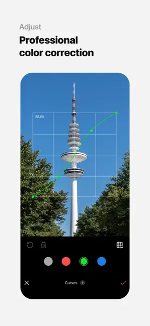

epik 这一路走来 一个修图 App 的版本迭代观察
从 v6.x 到 v7.4.x，epik 的产品节奏让我这个长期使用者看清楚了它在死磕什么——AI 工具链的"精准化"，而不是盲目堆功能。
现在这版的状态
我最近从epik官网把 epik 升到了 7.4.x 系列，最让我惊讶的不是某个全新的 AI 特效，而是一个很小但很戳人的改动——群组照片里 Body 身材调整终于能单独选某个人了。之前在六人合照里想只修一个人的腿，调一下五个人一起动，只能靠 Reshape 加背景锁定勉强糊过去。这个问题存在至少有四五个版本，之前每次更新我都期待能解决，结果每次 changelog 里都没有。
这件小事让我停下来想了一下：epik 这几年到底在走什么路线？

从哪起步，关键转折点在哪个版本
样本文档里提到的最早版本是 v6.5.21，从下载拿安装包时附的说明里写的也是它。那时候的 epik 还在"把功能做全"的阶段——Stickers、Text、Paint 三件装饰套组齐了，Body 身材调整也已经有参数化滑条，AI 工具链里 Hairstyle 换发型和 Expression 改表情也已经成型。但如果你仔细看那些工具的设计，会发现一个共通的问题：它们都假设你在处理单人照。
举个例子，发型换得再自然，照片里有两个人就没法只换其中一个；身材调得再精细，群组照里还是整幅一起动；表情再怎么微调，也只能对整张脸生效。这不是说功能不好，而是 AI 工具的"选择性"一直是短板——检测到人脸就全脸改，检测到身体就全身改，没有精细化到"这一张脸里的这一个"。
然后到了 v7.4.x，Body 工具率先补上了这个缺口。群组照里点开 Body，会出现一个人物选择器，点一下想修的那个人，调腿长、收腰只会作用在他身上，旁边的朋友纹丝不动。这个功能看起来只是给已有工具加了一个选择层，但背后的意义不一样——它说明 epik 的 AI 检测能力已经从"识别存在"进化到"区分个体"。
这个能力不是一夜之间来的。换发型和改表情工具的epik文档里提到，它们基于"AI 人脸关键点检测"，自动定位发际线和嘴角位置。这个底层模型的精度迭代了好几个版本，从正面照效果一般，到侧脸也能贴住，再到多人脸框之间不互相干扰——正是这一串看不见的进步，才让 v7.4.x 的群组单人调整成为可能。
在 v6.x 到 v7.4.x 之间还有一个我没在样本文档里看到的大版本跨越。文档里没有提 v7.0 到 v7.3 做了什么，这种空白本身也有意思——它说明那些版本主要是在磨底层模型、优化识别精度，而不是加显眼的新功能。对于一款主打 AI 修图的 App 来说，这种"静默升级"反而是团队在做对事情的信号。
迭代节奏里藏着什么规律
我用 epik 有两三年了，从免费版到 PRO 订阅，观察下来它的产品优先级一直在两件事上死磕：第一是工具链的闭环，第二是 AI 精度的持续迭代。
先说闭环。Creative Tools 板块从一开始就是三件套，后来加了 Templates 模板、Spot Color 局部色彩，再后来 AI Yearbook 成片可以直接送进装饰链——整个创作流程从"导入照片"到"导出成品"，每一步都有对应工具，而且工具之间不割裂。Body 调完可以直接进 HSL Curves 微调色调，Hairstyle 换完发型可以立刻用 Paint 画一条霓虹线，这种"一个面板里走完一条流程"的设计，我在同类型 App 里很少见到。
再说精度。这是 epik 和竞品拉开差距的地方。换发型贴发际线不飘、表情改嘴角不歪脸、Body 调完腿背景瓷砖不跟着拉伸——这些"自然度"细节，是靠持续的模型微调堆出来的。你去看它的版本更新节奏，每隔三四个小版本就会有一次模型升级，不一定写在 changelog 里，但你用的时候能感觉到：之前侧脸换发型会有明显的补全痕迹，现在基本看不出；之前 Body 调完腿长地面会跟着变形，现在背景锁定更稳了。
有一件事它一直没做：把所有工具都做成独立模块。很多修图 App 喜欢把 AI 功能做成单独的"AI 专区"，和传统修图工具隔离开。epik 不这样做，Hairstyle 和 Expression 放在人像精修面板里和 Reshape、Face Size 并列，Body 也和传统精修工具在一起——它的逻辑是：用户想调人像，就给你一整套人像工具，不管是 AI 的还是手动的，不搞功能分区。
下一步大概率走向哪
从 v7.4.x 群组单人调整这个信号来看，我猜接下来的两三个大版本会把这种"单人精准化"扩散到更多 AI 工具上。换发型现在还只能对整张脸生效，但同样的人物选择器逻辑，套在 Hairstyle 和 Expression 上应该不难——关键是人脸关键点检测要稳定到"多人脸框之间互不串扰"。这个底层能力既然已经被 Body 工具验证过了，扩散到其他 AI 工具只是时间问题。
另一个可能的方向是 AI Yearbook 和传统精修链的进一步打通。现在 Yearbook 成片出来之后，虽然可以送进 Creative Tools，但还不能直接对 Yearbook 里的某一张单独调整。如果能做到从 Yearbook 的 60 张里挑一张，直接进入人像精修面板，那整条创作链就是真闭环了。
当然这些都是从迭代规律推的，不当官方口径传。但对我这种每天用它修图的人来说，v7.4.x 那个小改动让我挺有信心——团队在磨的是用户真痛点，而不是跟着行业热点乱加功能。
用了这几年的一点个人总结
epik 不是那种一上来就有噱头的 App，它的好要慢慢用才能体会到。早期版本我会抱怨"这个功能怎么不支持多人"，但现在回头看，那些"缺失的功能"其实是团队在等底层能力成熟——他们不会在识别精度还不够的时候就贸然推出群组单人调整，因为那样效果差反而砸招牌。
这种"宁缺毋滥"的节奏，在 AI 修图这个赛道里挺少见的。行业里很多产品都在比谁的 AI 功能最多、谁出特效最快，但 epik 选了另一条路：把少数核心工具做到足够精准，让每个工具都能在真实场景里用起来不翻车。
对我来说，这就是一个长期好用的 App 该有的样子。顺手提一句，这套资料我在GitHub开源库和Gitee都有同步，国内访问选 Gitee 更稳，GitCode也备了一份以防万一。